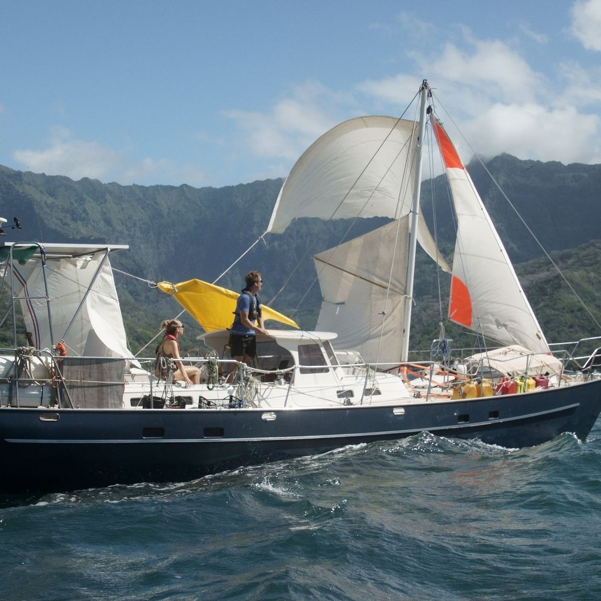

2.100 zeemijl zonder mast
Wat de oceaan me leerde over ondernemen
Tijdens onze wereldreis met de Blue Beryl brak midden op de Grote Oceaan de mast. Yvette en ik zeilden met noodtuig door: 2.100 zeemijl. Wat ik daar leerde, gebruik ik elke dag in mijn werk.
Weerbaarheid
Breekt het plan, dan maak je een nieuw plan. Niet morgen, nu.
Samenwerken
Aan boord heb je elkaar nodig. Ieder een taak, één koers.
Helder denken onder druk
Eerst overzicht, dan de volgende stap. Paniek kost snelheid.
Doen
Wie wacht op beter weer, komt nooit aan.
